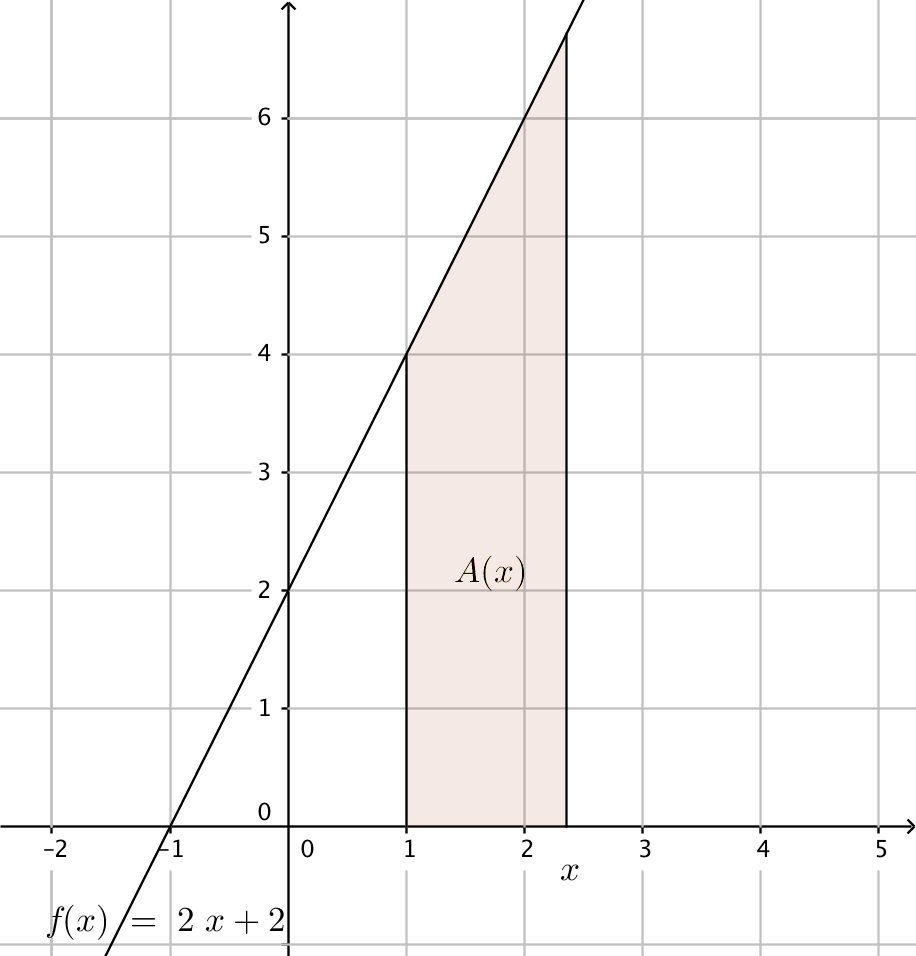

7. Areor
Bestäm arean av det färgade området i bilden.

Lösning
Vi har en parallelltrapets. Avståndet mellan de parallella sidorna är \( 3-1=2 \) och längden av de parallella sidorna är \( f(1)=2 \) och \( f(3)=4 \).
Arean är \( \dfrac{2+4}{2}\cdot 2 = 6 \).
Exempel 1 Bilda en funktion som beskriver arean, \( A(x) \), och derivera den. Vad märker du?

Lösning
Vi har en parallelltrapets. Avståndet mellan de parallella sidorna är \( 1-x \) och längden av sidorna är \( f(1)=2 \) och \( f(x) \).
Areafunktionen är \( A(x)=\dfrac{2+x+1}{2}(x-1)=\dfrac{1}{2}(x+3)(x-1)=\dfrac{1}{2}x^2+x-\dfrac{3}{2} \).
\( A'(x)=x+1 \) som är samma som \( f(x) \).
Exempel 2 Ett område i \( [1,x] \) avgränsas av funktionen \( f(x)=2x+2 \), \( x \)-axeln och två linjer som är vinkelräta \( x \)-axeln.
- Bestäm \( A(3) \)
- Bestäm \( A(1) \)
- Bilda funktionen \( A(x) \). Derivera den. Vad märker du?

Lösning
Vi har en parallelltrapets, där höjden är \( 4-1=3 \) och där längden för de parallella sidorna är \( f(1)=4 \) och \( f(4)=10 \).
Arean är \( A(4)= \dfrac{4+10}{2}\cdot 3 = 21 \).
- Vi får en figur där längderna för de parallella sidorna är lika långa och där avståndet mellan dem är 0. Arean är \( A(1)=0 \).
Avståndet mellan de parallella sidorna är \( x-1 \) och längderna för de parallella sidorna är \( f(1)=4 \) och \( f(x)=2x+2 \).
Arean är \( A(x)=\dfrac{4+2x+2}{2}(x-1) = \dfrac{2x+6}{2}(x-1)=(x+3)(x-1) = x^2+2x-3 \).
Då vi deriverar \( A(x) \) får vi \( 2x+2 \). Vi märker att \( A'(x)=f(x) \).
Exempel 3 Parabeln \( y=x^2 \) och \( x \)-axeln avgränsar ett område i intervallet \( [1,3] \). Bestäm arean av området.
Lösning

Vi bildar en funktion \( A \) som ger arean för funktionen \( f(x)=x^2 \) i intervallet \( [1,3] \). Areans värde är \( A \):s värde i punkten 3, alltså \( A(3) \).
En primitiv funktion för \( f \) är \( F(x)=\dfrac{1}{3}x^3 \). Betyder att \( A(x)=\dfrac{1}{3}x^3+C \).
För funktionen \( A(x) \) vet vi att \( A(1)=0 \), så vi bestämmer ett värde för \( C \).
\( \begin{array}{rcl} A(1) & = & 0\\ \dfrac{1}{3}1^3+C & = & 0 \\ C & = & -\dfrac{1}{3}\\ \end{array} \)
Vi har alltså \( A(x)=\dfrac{1}{3}x^3 -\dfrac{1}{3} \).
Den sökta arean är \( F(3)=\dfrac{1}{3}3^3-\dfrac{1}{3} = 8\dfrac{2}{3} \).
Antag att funktionen \( f \) är positiv och kontinuerlig i intervallet \( [a,b] \). Då är arean som bildas mellan funktionen och \( x \)-axeln och som begränsas av \( a \) och \( b \) \( A=F(b)-F(a) \) där \( F \) är någon primitiv funktion för \( f \) .

Exempel 4 Bestäm arean mellan funktionen \( f(x)=-x^2-4x \) och \( x \)-axeln.
Lösning
Skärningspunkterna för \( f \) och \( x \)-axeln är
\( \begin{array}{rcl} -x^2-4x & = & 0 \\ -x(x+4) & = & 0 \\ \end{array} \)
Alltså då \( x=0 \) eller då \( x=-4 \).
Den primitiva funktionen är \( F(x)=-\dfrac{1}{3}x^3-4\cdot\dfrac{1}{2}x^2 = -\dfrac{1}{3}x^3-2x^2 \).
Arean är \( A= F(0)-F(-4) = [-\dfrac{1}{3}\cdot0^3-2\cdot0^2]-[-\dfrac{1}{3}(-4)^3-2(-4)^2] = 0-(\dfrac{64}{3}-32)=10\dfrac{2}{3} \).
Uppgifter
- Bestäm arean av det färgade området i bilden så som gjordes i exempel 1.

Vi har en paralleltrapets. Avståndet mellan de parallella sidorna är \( 3-1=2 \) och längden av sidorna är \( f(1)=2 \) och \( f(3)=8 \).
Arean är \( \dfrac{2+8}{2}\cdot 2 = 10 \) a.e.
- Bilda en funktion \( A(x) \) som beskriver arean för funktionen \( f \) och \( x \)-axeln i intervallet \( [2,x] \) och derivera den. Vad märker du?

Vi har en parallelltrapets. Avståndet mellan sidorna är \( x-2 \) och längden av sidorna är \( f(2)=3 \) och \( f(x) \).
Areafunktionen \( A(x)=\dfrac{3+x+1}{2}(x-2) =\dfrac{1}{2}x^2+x-4 \).
Deriveringen ger \( A'(x)=x+1 = f(x) \).
- Bestäm arean i intervallet \( [1,4] \) som bildas mellan funktionen \( f(x)=x^2+1 \) och \( x \)-axeln så som gjordes i näst sista exemplet.
Den primitiva funktionen är \( F(x)=\dfrac{1}{3}x^3+x \).
Arean är \( A=F(4)-F(1) = [\dfrac{1}{3}\cdot4^3+4] - [\dfrac{1}{3}\cdot1^3+1] = \dfrac{76}{3} - \dfrac{4}{3} = 24 \).
- Bestäm arean i intervallet \( [-1,2] \) mellan funktionen \( f(x)=4x^3+4 \) och \( x \)-axeln.
Den primitiva funktionen är \( F(x)=x^4+4x \).
Arean är \( A=F(2)-F(-1) = [2^4+4\cdot 2]-[(-1)^4+4(-1)]=24-(-3) = 27 \).
- Bestäm arean mellan \( f(x)=-x^2+4 \) och \( x \)-axeln.
Skärningspunkterna är \( f(x)=0 \Leftrightarrow -x^2+4=0 \Leftrightarrow x=\pm 2 \).
Den primitiva funktionen är \( F(x)=-\dfrac{1}{3}x^3+4x \).
Arean är \( A=F(2)-F(-2)=[-\dfrac{1}{3}\cdot 2^3+4\cdot 2]-[-\dfrac{1}{3}(-2)^3+4(-2)] = \dfrac{16}{3}-(-\dfrac{16}{3})=\dfrac{32}{3} \).
- Bestäm arean som bildas mellan \( x \)-axeln och \( f(x)=e^x+1 \) i intervallet \( [0,2] \).
Den primitiva funktionen är \( F(x)=e^x+x \).
Arean är \( A=F(2)-F(0)=(e^2+2)-(e^0+0) = e^2+2-1=e^2+1 \).
- Bestäm arean som begränsas av funktionerna \( x=1 \), \( x=4 \), \( y=\dfrac{1}{2}x+2 \) och \( x \)-axeln.
Den primitiva funktionen är \( F(x)=\dfrac{1}{4}x^2+2x \).
De lodräta linjerna funger som gräns, så arean är \( A=F(4)-F(1)=(\dfrac{1}{4}\cdot 4^2+2\cdot 4)-(\dfrac{1}{4}\cdot 1^2+2\cdot 1) = 12 - 2\dfrac{1}{4} = 9\dfrac{3}{4} \).
- Bestäm arean som bildas mellan funktionen \( \sin 2x \) och \( x \)-axeln i intervallet \( [0,\dfrac{\pi}{2}] \).
Den primitiva funktionen är \( F(x)=-\dfrac{1}{2}\cos 2x \).
Arean är \( A=F(\dfrac{\pi}{2})-F(0) = -\dfrac{1}{2}\cos(2\cdot \dfrac{\pi}{2})-[-\dfrac{1}{2}\cos(2\cdot 0)] = -\dfrac{1}{2}(-1) - (-\dfrac{1}{2}\cdot 1)=\dfrac{1}{2}+\dfrac{1}{2}=1 \).
- För vilket värde på \( k \) gäller att arean som bildas i intervallet \( [1,k] \), mellan funktionen \( f(x)=\dfrac{1}{x} \) och mellan \( x \)-axeln har värdet 10?
Den primitiva funktionen är \( F(x)=\ln \mid x \mid \). Eftersom vi har intervallet \( [1,k] \) så är \( F(x)=\ln x \).
Vi får en ekvation, arean \( A = F(k)-F(1) =10 \)
\( \begin{array}{rcl} F(k)-F(1) & = & 10 \\ \ln k - ln 1 & = & 10 \\ \ln k -0 & = & 10 \\ k & = & e^{10} \approx 22026,5\\ \end{array} \)